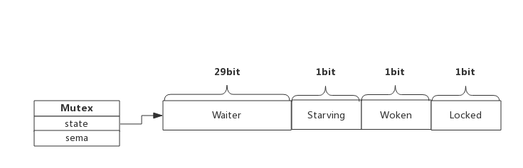
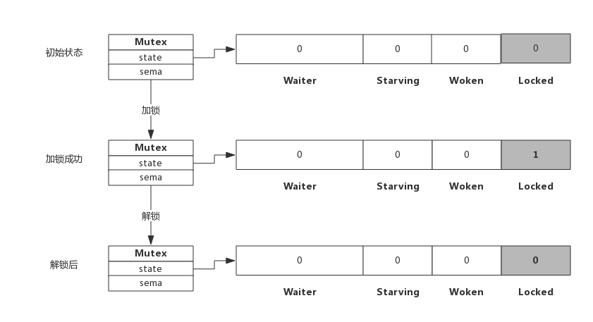

1. 前言
互斥锁是并发程序中对共享资源进行访问控制的主要手段，对此Go语言提供了非常简单易用的Mutex，Mutex为一结构体类型，对外暴露两个方法Lock()和Unlock()分别用于加锁和解锁。
Mutex使用起来非常方便，但其内部实现却复杂得多，这包括Mutex的几种状态。另外，我们也想探究一下Mutex重复解锁引起panic的原因。
按照惯例，本节内容从源码入手，提取出实现原理，又不会过分纠结于实现细节。
2. Mutex数据结构
2.1 Mutex结构体
源码包src/sync/mutex.go:Mutex定义了互斥锁的数据结构：
type Mutex struct {
state int32
sema uint32
}
- Mutex.state表示互斥锁的状态，比如是否被锁定等。
- Mutex.sema表示信号量，协程阻塞等待该信号量，解锁的协程释放信号量从而唤醒等待信号量的协程。
我们看到Mutex.state是32位的整型变量，内部实现时把该变量分成四份，用于记录Mutex的四种状态。
下图展示Mutex的内存布局：

- Locked: 表示该Mutex是否已被锁定，0：没有锁定 1：已被锁定。
- Woken: 表示是否有协程已被唤醒，0：没有协程唤醒 1：已有协程唤醒，正在加锁过程中。
- Starving：表示该Mutex是否处于饥饿状态，0：没有饥饿 1：饥饿状态，说明有协程阻塞了超过1ms。
- Waiter: 表示阻塞等待锁的协程个数，协程解锁时根据此值来判断是否需要释放信号量。
协程之间抢锁实际上是抢给Locked赋值的权利，能给Locked域置1，就说明抢锁成功。抢不到的话就阻塞等待Mutex.sema信号量，一旦持有锁的协程解锁，等待的协程会依次被唤醒。
Woken和Starving主要用于控制协程间的抢锁过程，后面再进行了解。
2.2 Mutex方法
Mutext对外提供两个方法，实际上也只有这两个方法：
- Lock() : 加锁方法
- Unlock(): 解锁方法
下面我们分析一下加锁和解锁的过程，加锁分成功和失败两种情况，成功的话直接获取锁，失败后当前协程被阻塞，同样，解锁时根据是否有阻塞协程也有两种处理。
3. 加解锁过程
3.1 简单加锁
假定当前只有一个协程在加锁，没有其他协程干扰，那么过程如下图所示：

加锁过程会去判断Locked标志位是否为0，如果是0则把Locked位置1，代表加锁成功。从上图可见，加锁成功后，只是Locked位置1，其他状态位没发生变化。
3.2 加锁被阻塞
假定加锁时，锁已被其他协程占用了，此时加锁过程如下图所示：

从上图可看到，当协程B对一个已被占用的锁再次加锁时，Waiter计数器增加了1，此时协程B将被阻塞，直到Locked值变为0后才会被唤醒。
3.3 简单解锁
假定解锁时，没有其他协程阻塞，此时解锁过程如下图所示：

由于没有其他协程阻塞等待加锁，所以此时解锁时只需要把Locked位置为0即可，不需要释放信号量。
3.4 解锁并唤醒协程
假定解锁时，有1个或多个协程阻塞，此时解锁过程如下图所示：

协程A解锁过程分为两个步骤，一是把Locked位置0，二是查看到Waiter>0，所以释放一个信号量，唤醒一个阻塞的协程，被唤醒的协程B把Locked位置1，于是协程B获得锁。
4. 自旋过程
加锁时，如果当前Locked位为1，说明该锁当前由其他协程持有，尝试加锁的协程并不是马上转入阻塞，而是会持续的探测Locked位是否变为0，这个过程即为自旋过程。
自旋时间很短，但如果在自旋过程中发现锁已被释放，那么协程可以立即获取锁。此时即便有协程被唤醒也无法获取锁，只能再次阻塞。
自旋的好处是，当加锁失败时不必立即转入阻塞，有一定机会获取到锁，这样可以避免协程的切换。
4.1 什么是自旋
自旋对应于CPU的"PAUSE"指令，CPU对该指令什么都不做，相当于CPU空转，对程序而言相当于sleep了一小段时间，时间非常短，当前实现是30个时钟周期。
自旋过程中会持续探测Locked是否变为0，连续两次探测间隔就是执行这些PAUSE指令，它不同于sleep，不需要将协程转为睡眠状态。
4.1 自旋条件
加锁时程序会自动判断是否可以自旋，无限制的自旋将会给CPU带来巨大压力，所以判断是否可以自旋就很重要了。
自旋必须满足以下所有条件：
- 自旋次数要足够小，通常为4，即自旋最多4次
- CPU核数要大于1，否则自旋没有意义，因为此时不可能有其他协程释放锁
- 协程调度机制中的Process数量要大于1，比如使用GOMAXPROCS()将处理器设置为1就不能启用自旋
- 协程调度机制中的可运行队列必须为空，否则会延迟协程调度
可见，自旋的条件是很苛刻的，总而言之就是不忙的时候才会启用自旋。
4.2 自旋的优势
自旋的优势是更充分的利用CPU，尽量避免协程切换。因为当前申请加锁的协程拥有CPU，如果经过短时间的自旋可以获得锁，当前协程可以继续运行，不必进入阻塞状态。
4.3 自旋的问题
如果自旋过程中获得锁，那么之前被阻塞的协程将无法获得锁，如果加锁的协程特别多，每次都通过自旋获得锁，那么之前被阻塞的进程将很难获得锁，从而进入饥饿状态。
为了避免协程长时间无法获取锁，自1.8版本以来增加了一个状态，即Mutex的Starving状态。这个状态下不会自旋，一旦有协程释放锁，那么一定会唤醒一个协程并成功加锁。
5. Mutex模式
前面分析加锁和解锁过程中只关注了Waiter和Locked位的变化，现在我们看一下Starving位的作用。
每个Mutex都有两个模式，称为Normal和Starving。下面分别说明这两个模式。
4.1 normal模式
默认情况下，Mutex的模式为normal。
该模式下，协程如果加锁不成功不会立即转入阻塞排队，而是判断是否满足自旋的条件，如果满足则会启动自旋过程，尝试抢锁。
4.2 starvation模式
自旋过程中能抢到锁，一定意味着同一时刻有协程释放了锁，我们知道释放锁时如果发现有阻塞等待的协程，还会释放一个信号量来唤醒一个等待协程，被唤醒的协程得到CPU后开始运行，此时发现锁已被抢占了，自己只好再次阻塞，不过阻塞前会判断自上次阻塞到本次阻塞经过了多长时间，如果超过1ms的话，会将Mutex标记为"饥饿"模式，然后再阻塞。
处于饥饿模式下，不会启动自旋过程，也即一旦有协程释放了锁，那么一定会唤醒协程，被唤醒的协程将会成功获取锁，同时也会把等待计数减1。
5. Woken状态
Woken状态用于加锁和解锁过程的通信，举个例子，同一时刻，两个协程一个在加锁，一个在解锁，在加锁的协程可能在自旋过程中，此时把Woken标记为1，用于通知解锁协程不必释放信号量了，好比在说：你只管解锁好了，不必释放信号量，我马上就拿到锁了。
6. 为什么重复解锁要panic
可能你会想，为什么Go不能实现得更健壮些，多次执行Unlock()也不要panic？
仔细想想Unlock的逻辑就可以理解，这实际上很难做到。Unlock过程分为将Locked置为0，然后判断Waiter值，如果值>0，则释放信号量。
如果多次Unlock()，那么可能每次都释放一个信号量，这样会唤醒多个协程，多个协程唤醒后会继续在Lock()的逻辑里抢锁，势必会增加Lock()实现的复杂度，也会引起不必要的协程切换。
7. 编程Tips
7.1 使用defer避免死锁
加锁后立即使用defer对其解锁，可以有效的避免死锁。
7.2 加锁和解锁应该成对出现
加锁和解锁最好出现在同一个层次的代码块中，比如同一个函数。
重复解锁会引起panic，应避免这种操作的可能性。